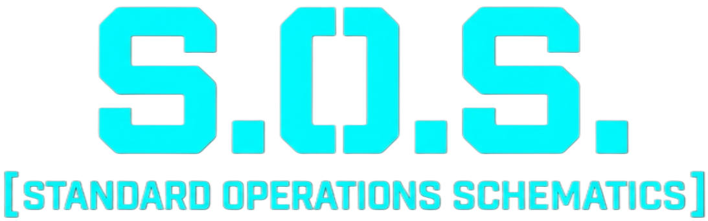

S.O.S es un ecosistema de mods que apunta a añadir un sistema de información integral unificado sobre el juego base, ya sea sobre contenido vanilla o mods de terceros, permitiendo a los jugadores obtener información o análisis necesarios en tiempo real para cualquier partida de Barotrauma de forma muy sencilla e integrada. (eg. Recetas de fabricación, Información médica detallada, Talentos, Tracker de recetas, etc.)
Este mod es totalmente compatible con mods desde C# con referencias duras, C# con referencias por reflexión y provenientes de Lua.
Dependences
Depende del ecosistema de LuaCsForBarotrauma.
[!TIP] If you are wondering how to get started with CSharp/Lua modding, please read LuaCsForBarotrauma Guide to get you started making Barotrauma mods.
</blockquote>
Lista de Contenido
Recomended to start: Introductory Guide
- SOS - Core
- 1. Getting Started
- 2. SOS Modules
- 3. Registration
- 4. Data Sharing
- 5. UI and GUI Components
Other Resources
Helpful Links